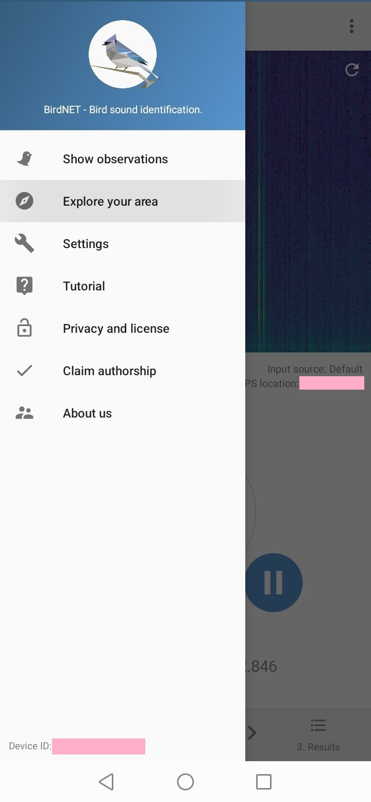
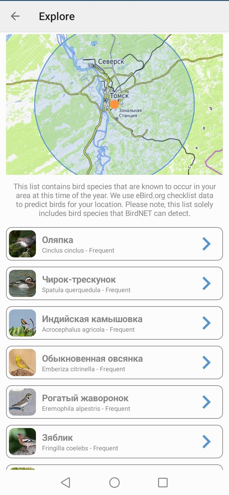

узнать, какие птицы водятся в данном регионе
Чтобы сузить круг поисков, начните с наиболее частых обитателей местности, где вы проводите наблюдение. В Томске, например, у вас больше шансов услышать синицу, черного коршуна или сороку, чем попугая ара или тукана. Конечно, очень хочется обнаружить яркую, неординарную особь (и такая возможность не исключена!), но реальность такова, что большая часть лучших певцов, которых мы слышим, на вид мала и невзрачна.
Информацию эту можно легко найти в Интернете. Существуют книги, справочники, а также соцсети и форумы, где орнитологи-профессионалы и любители делятся своими наблюдениями.
Примеры справочников: птицы России, птицы Сибири.
Интересное приложение для смартфонов BirdNET (о котором речь пойдет и дальше) также может подсказать, какие птицы и как часто встречаются в округе. Для этого нужно перейти во вкладку "Explore the area".


Узнать, как звучат определенные птицы, можно в презентациях Николая Мазепы, на сайте Macaulay Library (поиск осуществляется по латинскому названию вида птицы).
Также не лишним будет иметь представление, какие птицы водятся у воды, в лесах, в городской среде и т.д.
воспользоваться приложением-определителем
Здесь мы возвращаемся к BirdNET. Все предельно просто: вы записываете звук, а приложение определяет, что это за птица. Полагаться на его результаты можно далеко не всегда. Программа может попросту не распознать пения из-за фонового уличного шума, может выдавать разные, никак между собой не связанные предположения для одной и той же записи. Однако это хорошая опора, благодаря которой можно значительно сократить время собственных поисков.
Существуют и другие приложения, в т.ч. eBird, однако его я пока не успела протестировать, поэтому рекомендовать не могу.
спросить
Многие люди знают типичных зимующих и перелетных птиц своего места жительства. Бывает полезно просто прислушаться к разговорам, особенно старших людей — и, опять же, впоследствии проверить их слова самому.